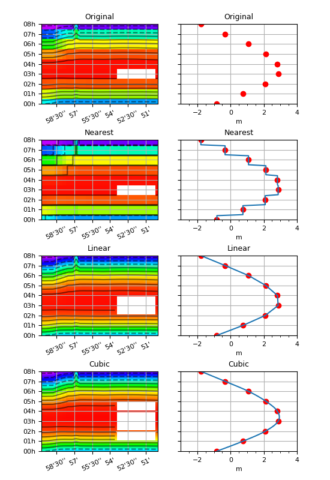

1.3.3.6.3.1.1. Interpolation 1D¶
Voir : regrid1d() interp1d() cubic1d() hov().

Un champ avec des valeurs manquantes sur un axes de temps basse résolution est interpolé vers un axe à plus haute résolution, par trois méthodes différentes.
# -*- coding: utf8 -*-
# Lecture du niveau de la mer sur 9 pas de temps à une latitude
import cdms2, MV2
from vacumm.config import data_sample
f =cdms2.open(data_sample('mars3d.xt.xe.nc'))
xe = f('xe', squeeze=1, time=slice(0, 9), lon=(-5, -4.83))
f.close()
xe.long_name = 'Original'
# On crée un trou
xe[3:4, 20:30] = MV2.masked
# Nouvel axe temporel plus précis
from vacumm.misc.axes import create_time
#old_time = xe.getTime()
old_time=create_time((xe.shape[0], ), 'hours since 2000')
xe.setAxis(0, old_time)
dt = (old_time[1]-old_time[0])/10.
new_time = create_time((old_time[0], old_time[-1]+dt, dt), old_time.units)
# Interpolation
from vacumm.misc.grid.regridding import interp1d
# - nearest
xe_nea = interp1d(xe, new_time, method='nearest')
xe_nea.long_name = 'Nearest'
# - linear
xe_lin = interp1d(xe, new_time, method='linear')
xe_lin.long_name = 'Linear'
# - cubic
xe_cub = interp1d(xe, new_time, method='cubic')
xe_cub.long_name = 'Cubic'
# Plots
from matplotlib import rcParams ; rcParams['font.size'] = 8
import pylab as P
from vacumm.misc.plot import yhide, xscale, savefigs, hov2, curve2
from vacumm.misc.color import cmap_jets
from genutil import minmax
vmin, vmax = minmax(xe, xe_lin)
kwplot = dict(vmin=vmin, vmax=vmax, show=False)
kwhov = dict(kwplot)
kwhov.update(cmap=cmap_jets(stretch=-.4), colorbar=False, xrotation=25.)
kwcurve = dict(kwplot)
kwcurve.update(transpose=True, color='r', yhide=True)
kwplot.update(order = '-d', title=True)
kwhov['date_fmt'] = '%Hh'
# - original
#print xe.getTime().asComponentTime()
hov2(xe, subplot=421, top=.95, hspace=.45, figsize=(5.5, 8), bottom=.06, **kwhov)
axlims = P.axis()
curve2(xe[:, 15], 'o', subplot=422, **kwcurve)
xscale(1.1, keep_min=1)
# - nearest
hov2(xe_nea, subplot=423, **kwhov)
P.axis(axlims)
curve2(xe[:, 15], 'o', subplot=424, **kwcurve)
print 'ok'
curve2(xe_nea[:, 15], **kwplot)
xscale(1.1, keep_min=1)
# - linear
hov2(xe_lin, subplot=425, **kwhov)
P.axis(axlims)
curve2(xe[:, 15], 'o', subplot=426, **kwcurve)
curve2(xe_lin[:, 15], **kwplot)
xscale(1.1, keep_min=1)
# - cubic
hov2(xe_cub, subplot=427, **kwhov)
P.axis(axlims)
curve2(xe[:, 15], 'o', subplot=428, **kwcurve)
curve2(xe_cub[:, 15], **kwplot)
xscale(1.1, keep_min=1)
# - save
savefigs(__file__)
P.close()